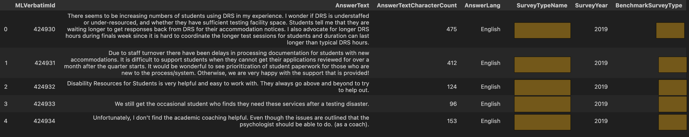
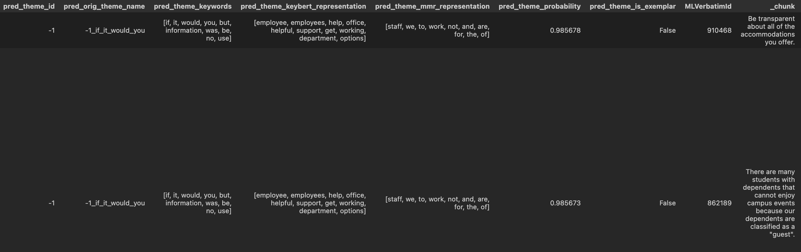

LLM Workshop #2 - From Noise to Knowledge: Mastering the Art of Objective Definition and Data Refinement”
What Do You Want To Build and Should You Build It?
If you want to avoid a lot of needless back-and-forth as you go through the process of curating datasets for evaluation and/or fine tuning, building your eval pipeleines, training models, and so forth, stop and ask yourself, “What do I want to build and why?”. How you answer those questions will inform everything going forward!
Why am I making a big deal about this?
Simple, when I started … I didn’t do it.
I had a general idea of building a tool calling system for work and just dove in, and as I would get into various aspects of development I’d be like, “Hold on, this isn’t right … why am I trying to do this when all I really need is this?” In the end, I had to start over a few times, and before the last time, I decided to go outside with the dogs and a good cup of coffee and really think about what I wanted to accomplish and why.
Below is the result of that quiet time well spent.
It’s crucial to deeply consider what you aim to achieve and understand the reasons behind it. Reflecting on your objectives and motivations helps ensure that your efforts are purposeful and aligned with your aspirations. It will also help prevent you from needlessly starting over, as well as, give you confidence that what you “think you want” is realistic, useful, and will add value.
Things to ask yourself:
What do you want the model to do for your end users?
Can you define specifically what the model is supposed to do, or is it so general that you find it difficult to scope or measure quality?
How diverse and varied does your data need to be to get the model to do what you want?
Objective Definition
For this project I’ll be building a system where a user can ask an AI to perform various NLP tasks on one or more text documents. These documents represent survey comments sourced from several kinds of surveys delievered in higher education institutions (e.g., staff, faculty, student satisfaction and engagement surveys). There are core tasks that I need to perform like machine translation and sentiment analysis, but I’d also like to build a system whereby a user can provide it their own tools focused on NLP and the system figure out how to use them correctly.
Version 1.0
Currently I have a pipeline, that for every task, makes a call to GPT-4 for every document. I did this because I couldn’t get good results by giving GPT several somewhat complex tools for it to use based on what the user asked. The tools would get called but the results weren’t great. Evaluation has been left to the eyeballs of myself and other human data scientists, which of course isn’t optimal either.
Given that this current system is slow to process any substantial set of survey comments, relatively expensive given the number of calls to OpenAI I’m making, and doesn’t have a real evaluation-first workflow … I figured it was a good candidate for the course project. At the very least I could build an eval framework to really understand how well things were working and maybe fine tune a smaller model that could understand how to properly call all the tools to satisfy an end user’s ask in a single go.
The Surface Area
If your objectives are too general, for example a general purpose chatbot or even a general purpose tool calling machine, you are likely headed to some rough times. Considering my objective above, what can I infer about what I really want to build here?
The model should use NLP tools for specifically understanding survey comments from staff, students, and faculty in higher education. These comments are sourced from a number of surveys delievered to higher education audiences all over the country
Some clients allow for their surveys to be taken into Spanish, so the machine translation tool will need to be called initially for each of these comments so that the remaining tasks can be performed wholistically on English texts.
Aside from machine translation, the core tools consist of functions for sentiment analysis, NER, summarization, and thematic analysis.
Each task operations on either whole survey comments or on semantically chunked comments that need to be associated to a “topic” for thematic analysis.
The tools should be focused on performing NLP tasks well, particular in the business domain of survey comments in higher educational settings.
Retrospective
Considering the above, this system definitely needs a solid eval workflow but also presents a potential great argument for fine tuning.
The more specific and specialized the task and/or data, the more likely you are to find success in fine tuning
Both the domain and tasks are very specific to higher education and NLP analysis in that setting, I have access to a lot of diverse data, and there is definite business value in creating a model that might reduce costs, speed up processing, and perform at the same level as GPT-4.
Given all this, I feel pretty good about proceeding.
Data Refinement
Based on my objectives, I need to chiefly be able to support two uses cases:
Tasks that need to be performed on a single document (e.g., translation, summary, NER, sentiment). Traditionally we have only done sentiment on chunks because it is the chunks that are associated to topics and we want to report sentiment by topic. This still needs to happen but it might also be interesting to predict sentiment across the full comment as well.
Tasks that need to be performed on a collection of related documents (.e.,g thematic analysis, topic sentiment).
In this section we ask, “How can I curate a set of survey comments and semantically related chunks that are varied enough to support these two use cases across all our survey clients?”
Build Some Datasets
I need a diverse set of documents from different survey clients, delivered to different audiences (staff, student, and faculty), and with a subset being in Spanish. I also need to clean up these documents so they are actually useful. If they are too short or represent useless statements like “N/A” or “I don’t know”, they probably won’t be very helpful.
I don’t need to synthetically create any of the raw documents since I created the survey sytem and have access to the Microsoft SQL Server database it lies in.
Thinking about the use cases I need to support, the following four datasets will be created:
_clean: A cleaned up version of the raw document dataset_sample_Xk: A sample ofXrows fromcleaned(mine will end up to be roughly 14k survey comments)_sample_Xk_chunked: A properly chunked version of_sample_Xkthat includes predicted topics as well._sample_Xk_topics: The chunks associated to each topic
Document analysis tasks will use a mix of datasets #2 and #3 so they can learn to operate of both full and chunked comments. Related document analysis will use dataset #4 for thematic analysis and sentiment.
I am prohibited from sharing the actual data, but I can share the code I wrote to create these datasets for this project.
Step 1: Cleanup
I have almost 500k comments that span decades of surveys. Before building a representative sample, I want to remove those comments that aren’t likely to be used or even of much use for NLP tasks. For example, comments that are too short or uninformative (e.g., like “N/A”, or “Great”) shouldn’t be part of eval/training datasets. Preprocessing in version 1.0 takes these comments out in current pipeline so we’ll do so here as well.
After loading the full dataset and filtering on the columns I need to build up the datasets above, my DataFrame looks like this: 
In particular, we’ll run the functions below to slim this dataset down and give us quality comments we can confidently use in building out our sampled datasets.
A. Remove NaNs and Trim Whitespaces
def init_document_preprocessing(df: pd.DataFrame, text_col: str):
"""Remove empty documents and clean up whitespace."""
df = df.copy()
# Remove all rows where `text_attr` is Nan
df = df.dropna(subset=list(set([attr for attr in [text_col] if attr is not None])), how="all")
# Remove all whitespace from `text_attr`, `language_attr`, `non_english_text_attr`
for attr in list(set([text_col, "AnswerLang"])):
if attr is not None:
df[attr] = df[attr].apply(lambda v: str(v).strip())
return df
df = init_document_preprocessing(raw_df, text_col="AnswerText")B. Remove Duplicate Documents
Duplicate comments won’t be helpful and they definitely exist even within a single survey. For example, some users try to game the system by repeating the same comment thoughout the survey in hopes of making sure their points float to the top.
def remove_duplicate_documents(df: pd.DataFrame, text_col: str):
"""Eliminate duplicate documents."""
df = df.copy()
unique_attrs = [text_col]
# Remove duplicate rows (keeping the first instance)
return df.drop_duplicates(subset=unique_attrs).copy()
df = remove_duplicate_documents(verbatims_df, text_col="AnswerText")C. Remove Duplicated Sentences
The same folks above also like to try and game the system by repeating the same phrase over and over again. The below code does a decent job at eliminating a string of repetitive content.
def remove_duplicate_sentences(text: str):
"""Remove duplicated sentences throughout an entire text sequence."""
if text is None:
text = ""
text = re.sub(r"(?<=[.!?])\s*", " ", text)
sentences = nltk.sent_tokenize(text)
unique_sentences = list(dict.fromkeys(sentences))
# Tokenize the text into sentences and remove duplicates by converting to set and back to list
return " ".join(unique_sentences)
def remove_duplicate_sentences_in_documents(df: pd.DataFrame, text_col: str):
df = df.copy()
df[text_col] = df[text_col].apply(lambda v: remove_duplicate_sentences(v))
return df
df = remove_duplicate_sentences_in_documents(verbatims_df, text_col="AnswerText")D. Remove Meaningless and Short Documents
Comments that are too short or uninformative aren’t helpful to any NLP tasks. The code below removes much of this based on my examination of the data and running classification models that predicts whether a comment is_nonsense.
remove_texts = [
"none",
"nothing",
"not sure",
"no suggestions",
"no comment",
"no comments",
"nothing to add",
"n/a",
"none at this time",
"no comments at all",
"see previous comment",
"not really",
]
def is_bad_value(s, remove_texts=[]):
is_bad = False
for rt in remove_texts:
is_bad = bool(re.match(rf"^{rt.lower().strip()}[!.,;:?]*$", str(s).lower().strip()))
if is_bad:
break
return is_bad
def remove_meaningless_documents(df, text_col: str):
df = df.copy()
df[text_col] = df[text_col].apply(lambda v: str(v) if v is not None and not is_bad_value(v, remove_texts) else "")
return df
def remove_short_documents(df: pd.DataFrame, text_col: str, min_text_length: int = 5):
df = df.copy()
df = df[pd.notna(df[text_col]) & (df[text_col].str.len() >= min_text_length)]
return df
df = remove_meaningless_documents(verbatims_df, text_col="AnswerText")
df = remove_short_documents(verbatims_df, text_col="AnswerText")That’s it for dataset #1, let’s save it
df.to_parquet(f"{DATA_DIR}/clean/documents_all.parquet")Step 2: Sample
There are a lot of documents so we’ll create a subset of < 15k with enough variation for meaningful scoring functions and finetunes
A. Build a Representative Subset
There are two core types of surveys, satisfaction and engagement. There are many more instances of the satisfaction surveys so we’ll want to have more of those in our sampled dataset to mimic reality.
filtered_df = df[(df["BenchmarkSurveyType"].str.startswith("CSS-"))]
# Calculate the number of samples for each BenchmarkSurveyType
sample_sizes = filtered_df["BenchmarkSurveyType"].value_counts(normalize=True) * 10000
sample_sizes = sample_sizes.round().astype(int)
# Sample records proportionally with a bias towards longer comments
sampled_df = pd.DataFrame()
for survey_type, size in sample_sizes.items():
subset = filtered_df[filtered_df["BenchmarkSurveyType"] == survey_type]
weights = subset["AnswerTextCharacterCount"] / subset["AnswerTextCharacterCount"].sum()
sampled_records = subset.sample(n=size, weights=weights, random_state=42)
sampled_df = pd.concat([sampled_df, sampled_records])
# Reset index if needed
sampled_df = sampled_df.reset_index(drop=True)
# This gets us down to 10k examples of customer satisfaction like surveys.
sampled_df = pd.concat([sampled_df, df[(df["BenchmarkSurveyType"].str.startswith("SAW"))]])
# Adding in these staff engagement surveys get us to a total of almost 14k examplesB. Add in some Spanish Documents
I lied when I said there was no syntetically generated data because we’re going to use an LLM to generate some Spanish content from our English survey comments. We’ll use one of my favorite libraries, LangChain, to generate 250 Spanish examples.
class SpanishTranslation(BaseModel):
"""The translation of a document from English to Spanish."""
spanish_translation: str = Field(..., description="The English tranlsation")
def get_openai_translation_messages(domain: str = "survey comments"):
system_msg = f"You are a world class translator. Translate the English {domain} below to Spanish. Properly escape strings."
human_msg = "{input}"
prompt_msgs = [SystemMessage(content=system_msg), HumanMessagePromptTemplate.from_template(human_msg)]
return prompt_msgs
llm = ChatOpenAI(model="gpt-4")
messages = get_openai_translation_messages()
prompt = ChatPromptTemplate(messages=messages)
functions = [convert_to_openai_function(SpanishTranslation)]
chain = prompt | llm.bind(function_call={"name": SpanishTranslation.__name__}, functions=functions) | JsonOutputFunctionsParser()
spanish_sample_df = sampled_df.sample(250, random_state=9)
spanish_translations = []
for r_idx, r in spanish_sample_df.iterrows():
rsp = chain.invoke({"input": str(r["AnswerText"])})
spanish_translations.append(rsp["spanish_translation"])
sampled_df["AnswerText_NonEnglish"] = None
sampled_df["AnswerLang"] = "English"
spanish_sample_df["AnswerText_NonEnglish"] = spanish_translations
spanish_sample_df["AnswerLang"] = "Spanish"
# Set 'MLVerbatId' as the index for both DataFrames
sampled_df.set_index("MLVerbatimId", inplace=True)
spanish_sample_df.set_index("MLVerbatimId", inplace=True)
# Update df1 with values from df2
sampled_df.update(spanish_sample_df)
# Reset index if needed
sampled_df.reset_index(inplace=True)That’s it for dataset #2, let’s save it
df.to_parquet(f"{DATA_DIR}/clean/documents_sample_14k.parquet")Step 3: Chunk
The core thematic analysis task we need to support operates on semantically related survey comment “chunks”. In addition to predicting themes for these collections, we also need to report the sentiment for each chunk so that we can visualize sentiment as it relates to each topic.
We’ll use the semantic-chunkers library to build semantically related chunks which is something the current pipeline doesn’t use yet, but makes a lot of sense to me after exploring chunking in depth over the past few months or so. I really like this library and it comes with some nifty visualization capabilities for tuning its hyperparameters.
Chunking can be somewhat complex and use case specific, but for the puposes of survey comments we are usually working with paragraphs and sentences sometimes containing bullet points to further deliniate different topics. Given this, I’ve asked chatGPT about general token usage for English paragraphs and sentences to set a few of these hyperparameters and do some basic preliminary chunking before using the semantic-chunkers library.
According to chatGPT, the average number of characters in an English sentence and paragraph can vary based on factors such as writing style, purpose, and medium. However, general estimates are as follows:
Average Characters in an English Sentence:
- An average English sentence typically contains around 15 to 20 words.
- Assuming an average word length of 5 characters (including spaces and punctuation), an average sentence would be approximately 75 to 100 characters.
Average Characters in an English Paragraph:
- An average English paragraph usually contains about 3 to 5 sentences.
- Using the upper bound of 5 sentences and assuming each sentence is 100 characters, an average paragraph would be around 300 to 500 characters.
These averages can fluctuate based on the type of text (e.g., academic writing, casual writing, technical documentation) and individual writing styles but it seems reasonable to assume on average:
- A min sentence has 15 * 1.5 = 23 tokens
- A max paragrpah as 20 _ 5 _ 1.5 = 150 tokens
If you’re interested in learning about the semantic-chunkers, check out these resources:
Semantic Chunkers Into (Colab)
Semantic Chunking for RAG (James Briggs)
A. Preliminary Chunking
We start with the assumption that paragraphs likely represent distinct topics a user is trying to get at in any given survey comment. If there are bullet points, regardless of format, we also assume that each of these likely represent a distinct idea or “chunk.” Given this, we will do some initial chunking based on those assumptions.
Also, I have and continue to look at a lot of this data, so they aren’t really assumptions as much as they simply reflect what I see.
def chunk_paragraphs(text):
paragraphs = re.split(
"\n\n|\r\n|\\\\n\\\\n|\\\\r\\\\n|" + r"\\n\s*[-•*o]|\\n\s*\d+[.)]", text
) # text.split("\n\n") # Split text by double line breaks to identify paragraphs
return [chunk.strip() for chunk in paragraphs if len(chunk.strip()) > 4]
def chunk_texts(df: pd.DataFrame):
"""Chunk the paragraphs keeping any bullet points alongside their context."""
df = df.copy()
df.insert(1, "_seq", df["AnswerText"].apply(lambda v: chunk_paragraphs(v)))
df = df.explode("_seq").reset_index(drop=True)
df["_seq"] = df["_seq"].str.strip()
df.insert(2, "_seq_id", df.groupby(["MLVerbatimId"]).cumcount())
df["_seq_length"] = df["_seq"].str.len()
return df
def remove_bullet_points(text):
return re.sub(r"(^|\n)\s*[-•*o]\s*|\n\s*\d+[.)]\s*", " ", text).strip()
chunked_df = chunk_texts(sampled_df)
chunked_df["_seq"] = chunked_df["_seq"].apply(remove_bullet_points)B. Semantic Chunking
From the semantic-chunkers intro notebook mentioned above:
The statistical chunking method our most robust chunking method, it uses a varying similarity threshold to identify more dynamic and local similarity splits. It offers a good balance between accuracy and efficiency but can only be used for text documents (unlike the multi-modal ConsecutiveChunker).
The StatisticalChunker can automatically identify a good threshold value to use while chunking our text, so it tends to require less customization than our other chunkers.
I did some review of specific examples and played with the hyperparameters to get what looked like decent results. Here is what I came up with ultimately for perform the final chunking of the dataset.
encoder = HuggingFaceEncoder(name="thenlper/gte-large")
chunker = StatisticalChunker(
encoder=encoder,
threshold_adjustment=0.01,
dynamic_threshold=True,
window_size=5, # 5,
min_split_tokens=23, # 100,
max_split_tokens=300, # 500
split_tokens_tolerance=10,
plot_chunks=False,
enable_statistics=False,
)
def get_semantic_chunks(txt: str, min_chars_to_chunk: int = 90):
try:
if len(txt.strip()) < min_chars_to_chunk:
return [txt.strip()]
chunks = chunker(docs=[txt])
return [chunk.content.strip() for chunk in chunks[0]]
except Exception as e:
return [txt.strip()]
seqs = chunked_df["_seq"].values.tolist()
chunked_docs = []
for seq in tqdm(seqs):
chunked_docs.append(get_semantic_chunks(seq))
chunked_df.insert(1, "_chunk", chunked_docs)
chunked_df = chunked_df.explode("_chunk").reset_index(drop=True)
chunked_df["_chunk"] = chunked_df["_chunk"].str.strip()
chunked_df.insert(2, "_chunk_id", chunked_df.groupby(["MLVerbatimId", "_seq_id"]).cumcount())
chunked_df["_chunk_length"] = chunked_df["_chunk"].str.len()C. Use BertTopic Associate Each Chunk To A Topic
I’m not going to go into the specifics of this step since I don’t get detract from the focuse of this article anymore than I likely already have. Suffice to say, I use BERTopic to create and assign topics to each “chunk”. This is another great and feature rich library that I’ve been using for a few years.
The artifact produced at the conclusion of this step is a DataFrame with topic identiferis associated to each _chunk. It looks like this: 
That’s it for dataset #3, let’s save it
chunked_df.to_parquet(f"{DATA_DIR}/clean/documents_sample_14k_chunked.parquet")Step 4: Topic Summaries
We need to evaluate the ability for the model to summarize and define action plans for related “chunks” as identified by a topic model. We’ll use the chunked dataset create above to put something together we can use to predict/evaluate the themes and action plans we assign to topics.
Fortunately for you, the reader, there isn’t alot of code to make this happen :)
topics_df = chunked_df.copy()
cols = ["pred_theme_id", "pred_orig_theme_name"]
topics_df["pred_theme_id"] = topics_df["pred_theme_id"].astype(int)
topics_df["_chunk"] = topics_df["_chunk"].astype(str)
summaries_df = topics_df.groupby(by=cols)["_chunk"].agg(list).reset_index()That’s it for dataset #4, let’s save it
summaries_df.to_parquet(f"{DATA_DIR}/clean/documents_sample_14k_topics.parquet")Next Steps
With some high quality context, we’ll move on to getting a “vibe check” for how likely what we want to build is possible by seeing what kinds of structured outputs we get when using the big dogs. In particular we’ll be running some tests with OpenAI, Anthropic, Fireworks, and Replicate to develop a good intutition of how well to expect things might work with both closed and open source models.
Again, I’m using Hamel’s ftcourse repo as a general guide for building this project out so make sure to check it out as y’all start your own journeys. The topic in this blog post isn’t necessarily covered in any of his notebooks so consider this the 00 notebook that is more or less implied in the course.
Also, I welcome any ideas on improving anything and everything presented above. Especially if you notice any really egregious and glaring errors in my thinking or workflow, I’d defintely appreciate your thoughts. Either way, thanks for reading to the end :)